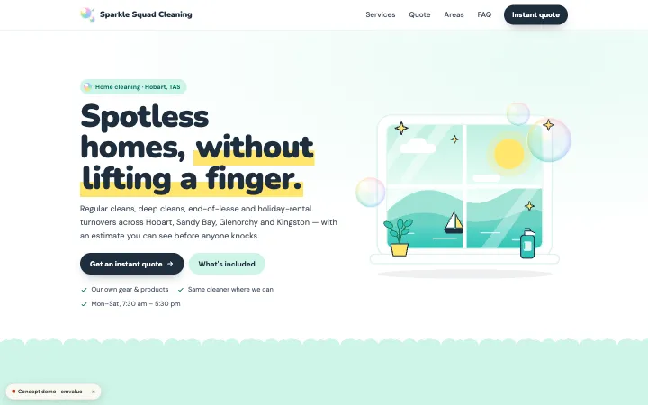
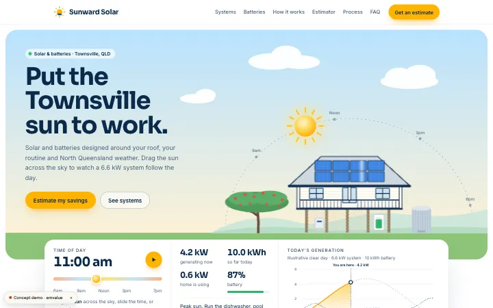
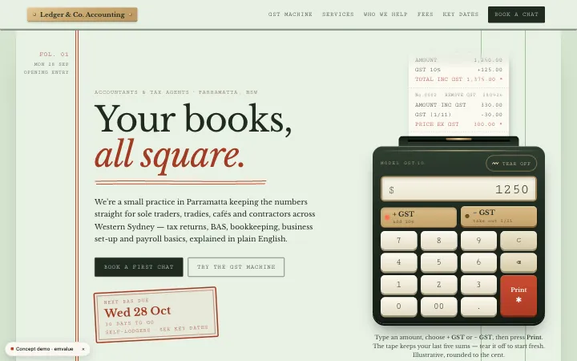

EMVALUE / Website & app services
Tools that stop you doing the same work twice
We build custom web tools for small teams in Australia, such as client portals, quote tools and internal dashboards. We start by mapping the process and choosing the smallest useful tool, including permissions and data handling from the beginning. Mainly online collaboration in English and Chinese leads to a written scope and quote before development starts.
Who this is for
- Teams entering the same information into several places, where a clear flow could avoid repeating the work.
- Businesses preparing manual quotes or handling enquiries across separate channels and considering a more organised workflow.
- Owners evaluating a client portal or an internal view of work, rather than adding features without a defined task.
The scope
What we agree in the scope
- A map of the current process: who provides information, who uses it and where the same work is repeated.
- An agreed first useful tool, with the input, calculation or view needed to support that task.
- Permissions and data-handling arrangements planned alongside the flow, including who can see or change information.
- Assessment of existing service connections and a written handover arrangement for the chosen scope.
Scope separately
- An automatic commitment to connect every existing system; we assess access and requirements first.
- Every part of the business in one release. Further tasks can be scoped after the first useful tool is reviewed.
- Ongoing changes or support beyond the written maintenance and handover scope.
Map the task before choosing the tool
Explain a task from the first enquiry or input to the point where your team uses the result. Identify the information that is copied, calculations done by hand and places where a customer or colleague has to ask for an update. That map gives a tool a practical purpose.
A client portal, quote calculator or dashboard is useful when its role is clear. Choose a small starting scope instead of treating the tool name as the whole requirement. Define what people enter, what result they need and who is responsible for reviewing it.
Plan permissions and connections
Permissions and data processing are part of the first discussion. Agree which people can see or change each part of the tool, where information is stored and what handling is required. The proposal records these arrangements; a generic tool description is not a substitute for that decision.
We can assess connections to services you already use. Tell us the systems and access available before a connection is scoped. Handover should describe the agreed accounts, use and maintenance boundaries, so later changes can be discussed against a known first version.
How we work
- 1
Understand the job
We discuss your business, audience, existing tools, budget and the problem you want to solve.
- 2
Agree the scope
You receive a written proposal covering the work, deliverables, schedule, costs and payment stages.
- 3
Design, build, review
Review layouts and working previews at agreed milestones. We confirm any change in scope before proceeding.
- 4
Launch & hand over
We check the agreed flows, help you launch and hand over accounts and guidance. Ongoing support is agreed with you.
Written scope and costs
- 01
Business tools are quoted to scope in writing after the process is understood. Inputs, calculations, permissions, data handling and system connections affect the work. The website cost guide explains common scope factors; it is not a fixed price for a custom tool. The proposal states deliverables, payment stages and ongoing costs, with additional tasks confirmed before work proceeds.
Interactive concepts

Sparkle Squad Cleaning · Concept
A concept we designed for a fictional cleaning business: an illustrative calculator shows how job choices can feed a quote.

Sunward Solar · Concept
A concept we designed for a fictional solar business: a quote interaction demonstrates collecting inputs before showing an indicative result.

Ledger & Co. Accounting · Concept
A concept we designed for a fictional accounting practice: a quote tool demonstrates organising choices around a professional service.
Working together across cities
We work online with businesses across Australia and overseas. If you'd prefer to meet in person, we can arrange it in Sydney, Melbourne or Perth.
Questions before you start
How much does a tool cost?
We quote after understanding the scope. Calculations, permissions, data handling and connections all affect it. Use the website cost guide’s factors as preparation for a discussion, then review the written tool proposal rather than assuming a website starting price applies.
Can it connect to our current systems?
We assess the systems, access and required flow before confirming a connection. Explain which information needs to move and who uses it. The agreed quote states the connection work and its boundaries, rather than assuming every system can be linked.
Where is the data stored?
The proposed storage and handling arrangements are explained in the written plan. We discuss the information involved and access permissions from the start. Ask about these before development so they are decisions within the scope, not unspecified details left until handover.
Discuss the work you need
Describe one repeated task and the information involved. Include the systems you use and who needs access. We can discuss the smallest useful first tool, assess connections and prepare a scope for you to review.
Last updated: 2026-10-07